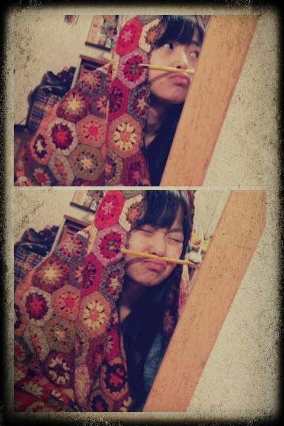

| 2012/02 10 Fri | 72回目*marika |
いつも読んでくださってる方、
初めて読んでくださった方、
コメントしてくださった方、
ありがとうございます:D

せいたん、私、ななみん、まいまい、
ゆみ姉、みさみさ、らりんの指♡
...........................
・俺、朝起きると先ず洗濯物をエアコンで
乾かすんだけど、ベビたんは朝起きると
最初に何やりますか？
*****
目が覚めたらその場ですんごい伸びます。
そんときにすんごい声が出ます。
「んんんぬううぅあああぁぁ（あくび）」
身長伸びますように...てやってます笑
・まさかだと思うけど、まりちゃんも
さばドルだったりしないよね？www
*****
いや...それはちょっと言えないです。←えぇ
まっまさか!!
自分が中学生な訳ないですよ!!!!
・まりちゃんの趣味、好きなこと又は
こんな話しするとテンション上がる！
って言うのってあるかな？
握手会の話しネタの参考にしたいです(^^ゞ
*****
BloGのこととか...?
どんなお話でもいいですよ^^*
だって会えるだけでうれしいもん:D!!
・べびたんどんなケーキが好き？
*****
いい?多いよ?
ミルクレープ、いちごいっぱいの、フルーツいっぱいの
チーズケーキ、チョコレートの...
ケーキはなんでもいける〜♪ふんふふん
・おでこ撫でたいですううう！←
握手会で触らせてくれますか？(笑)
*****
友達によくデコぴんされてたぁxO
おでこもほっぺも鼻もだね^^笑
多いね...!!
・写真に落書きするときは
指で書いてる？ペンで書いてる？
・ばぶたんの落書きってめっちゃ細かいけど
なんかスマホ用のペンとか使ってる？
まさか指？？
*****
まさかの指ですー!!ぱんぱかぱーん
でも、あれなの。
写真を限界までアップにして描けるから
細かいのも指で余裕に描けちゃうの^^
最近のケータイってのは便利よね。
・マリオカートはベビーマリオ使ってるｗ
キャラクターは何使うの－？
得意なコースあるー？
*****
きのこ頭の子をよく選んでます:D
ノーマルなコースしか.....←←
・ベビたんの他に、ニックネーム付けて良いかな!?
*****
えっうれしいな〜＊
現時点ではベビたん意外にも
沢山のあだなが存在してます:^)!!
・イライラした時、ムカついたときは
どうやってストレス解消してるの?(´Д｀)
*****
私は溜め込みたくないので親友に電話します*
ダンス踊るとストレス発散!!とかも。
あと....
ぬいぐるみにやつあた ......
・コメのＵＲＬ書くとこって
記入してたら何かあるの？
*****
何が起きるのかはわ足しにもさっぱり....x(
・乃木坂４６は、今年はＡＫＢの総選挙に出るんですか？
*****
ライバルだから....
出ないのでは??と私は思います!!
・万理ちゃんは
ﾁｮｺとﾁｮｺ以外のもの(ｸｯｷｰとか)
どっちが好きですか？
*****
チョコすき〜♡
ビターチョコすきです^^
チョコ以外なら
クッキーとかせんべいとか笑
・「ベビ」はカタカナが良いのか平仮名なのか？？？
それとも「万理華」がいい？？？
*****
私最初の頃から『ベビたん』て書いちゃってて...
本当はどっちでも良いんですよ××;
そんなに深いこだわりはないから....
みなさんのすきな方でお願いします♪
もちろん『万理華』もうれしっ♡
・ベビたん抹茶の豆乳
飲んだことありますか^^？
*****
そっそれって最高の組み合わせじゃないの...!!
飲んだことあるような気がする。
また飲みたい〜**
・ベビたんが阪神タイガースを
応援しているそうだけど、好きな選手は誰かな？
*****
好きな選手....
全員応援してます:)
・ぐるカーの振り付けで
難しいところ、気に入ってるところってどこかな？
*****
サビで一列になって踊るのは難しいです><
でも一番すきなところはやっぱりサビの部分よね♡
昨日みゅみゅに
「ぐるぐる踊ってるまりかって超笑顔だよね」
て言われました^^
そのくらいぐるぐるカーテンめっちゃすきなんです!!
・まりちゃんってみんなにいじられてない？
まりちゃんからちょっかい出すような子いる？
*****
たぶん自分はかまってちゃんやから
近くにいるメンバーにちょっかい出すけども
最終的に私がいじられる,....笑
・俺、男子校に通ってるんだけど
男子校ってどういうイメージ？
*****
スポーツに燃えてそうなイメージ:Dきらきら
・早くベビたんに逢いたいのですが、
どうしたら耐えられますか？？
*****
私も早く乃木坂familyに会いたいよーx(♡
会いたくてうずうず〜....
かもしれない ♪
もうちょいだっ!!
待っててくださいね**
・まりかちゃんの推しメンは誰ですか？？
・まりかちゃんって推しメンとかいますか？？
*****
乃木メンは決められないね><
みーんなかわいいし、良い子やし、
優しいし......
48グループは研究中です !!
・バレエではどの作品を踊ったことがある？
*****
最後に踊ったのは
ドンキホーテのキューピットです。＊
また踊りたいな...
・前のブログで絵描く事が
特技のひとつって教えてくれたけど、
ロゴとか描ける？
*****
レタリング描くのめっちゃすきだったりします!!
じゃあ今度ロゴ描いたんぽ載せよっ☆
・ファンレター送っていいのかな？
もしよかったら宛先教えて下さい♡
*****
〒102-8353
東京都千代田区六番町4番地5
「乃木坂46運営事務局」宛
にお願いします♡
うれしすぎる...!!
ありがとうございますっっ
・メンバーの中でよく一緒にいるのは？
*****
みんなと仲良いんでしけど...
同い年メンは特に仲良いかなあ?
普段よく遊ぶんはねねとまひろ♡
おねえちゃんともお話しするし、
JCとも話すし....
ん〜...
全員やっ♡♡
・携帯なくなったヽ(；▽；)ノ
まぢで最悪
べびたん携帯なくなったらどうするー？←立派な質問！(笑)
なぐさめのお言葉ください(ToT)
*****
私もケータイを無くしたことあります。
探しまくって...そしたら奇跡的に見つかったんです!!
でも、探しても探して見つからなかったら
それは、もうそのケータイとバイバイしなだめだったんです。
ケータイも寂しいと思う。
長くつきあってくれてありがとう
の意味なんです!!
だから次のケータイと
無くさないって約束しよう。
もっと大事にするって約束しよう＊
そしたらもう次は大丈夫!!
・まりちゃんはスパゲティは何が好き⁇
*****
ジェノベーゼ、梅とおじゃこ、ミートソース
チーズいっぱいの、トマトいっぱいの
がすきです=3
・前に答えてくれてたかもしれないけど、
好きなディズニーのキャラクターは??(^ω^)
*****
バンビ、ダンボ、
モンスターズインク、トイストーリー
すき♡
・まりかちゃんはバレンタインに
チョコとか作ったりしますか？
私は友達に作ります
*****
meijiのちょっこれいとで♪
日頃感謝してるみんなに
渡したいと思ってます＊
....みなさんにも愛のこもった
ちょっこれいとを食べてほしいな
て思ってます**
渡したいな〜...
・べびたん体柔らかい？
*****
バレエやってたから柔らかい方だと思います!!
せっちゃんとストレッチしてるん楽しい♪
...........................
実は昨日記事書いてたのに
1回全部消してしまったんですよ; ;
消えた瞬間
ううううぅわーーーー
なんでここまできて消えるんじゃあー
となってました。
おまたせしてしまってごめんね><
では今日も頑張りまりか☆☆

ベビたん*****bA by marika